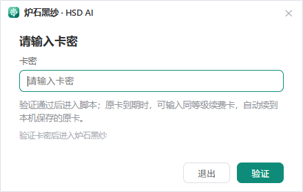
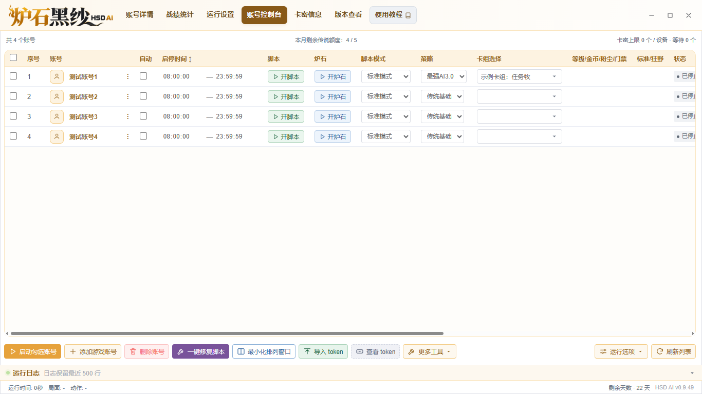
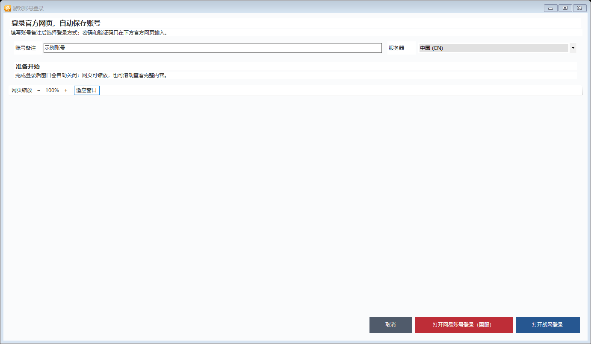
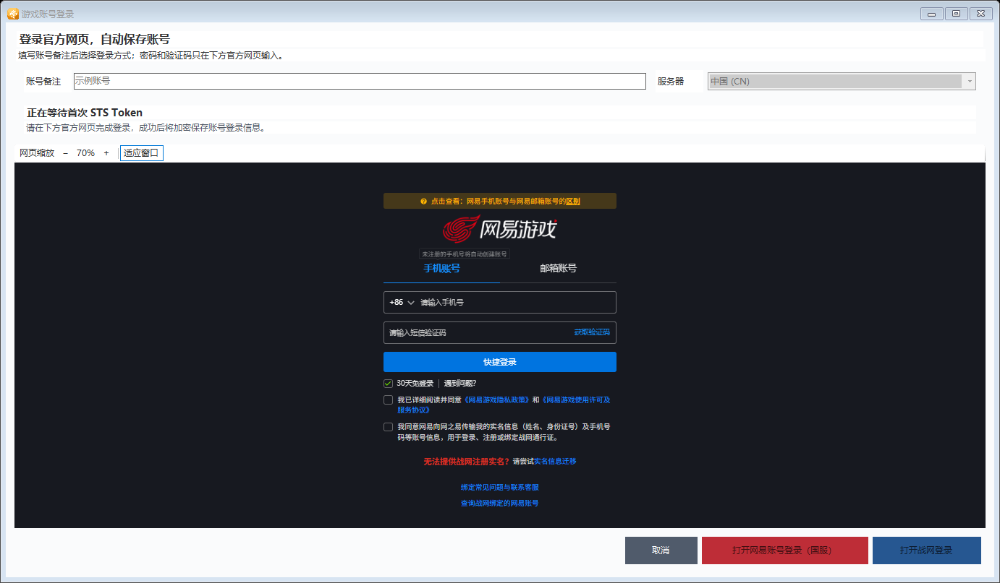
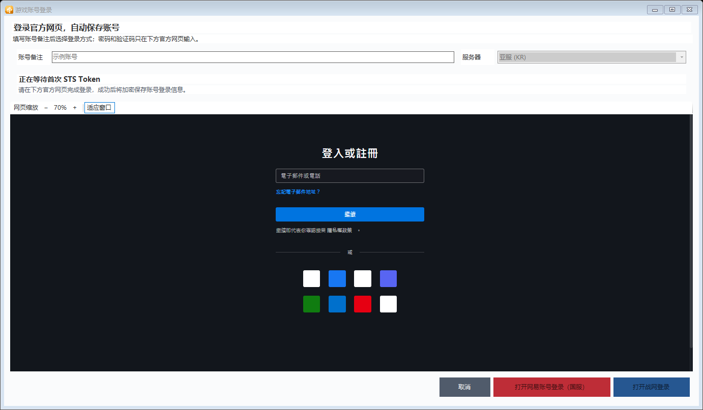
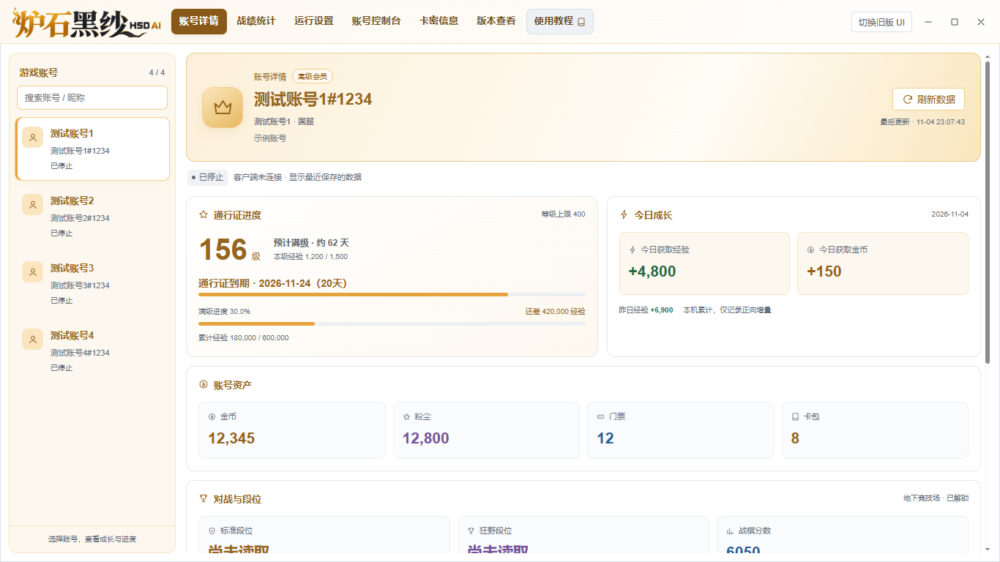
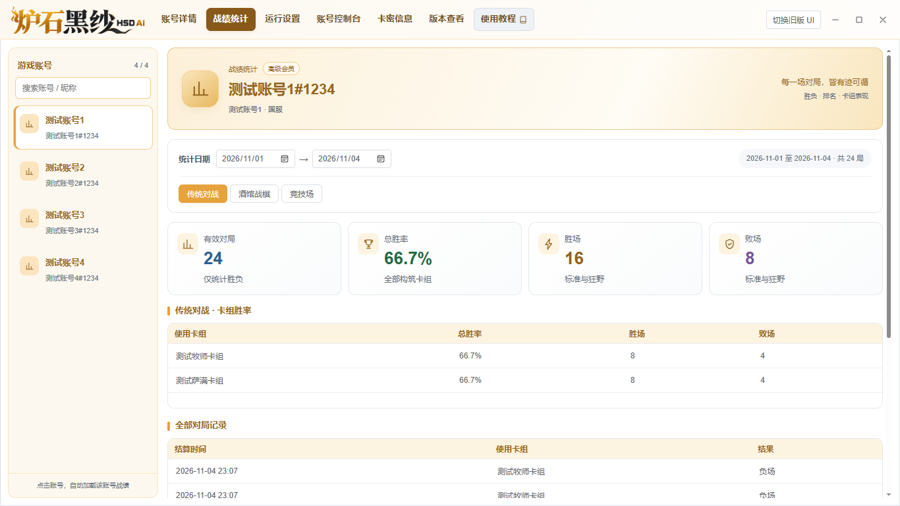
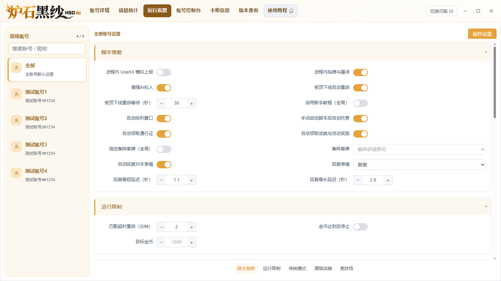

国服 · 中国（CN）
填写备注 → 服务器选择中国（CN） → 点击红色 打开网易账号登录（国服） → 在官方页面完成登录。
炉石黑纱新版图文教程。按步骤完成登录、选择模式与策略、设置卡组，再启动脚本。红色圈注对应步骤编号；点击截图可在新窗口查看原图。
保留安装包内全部文件，再从同一目录启动程序。
D:\炉石黑纱。不要直接在压缩包里运行。HsAuto.exe，在卡密验证窗口填入自己的卡密。
账号控制台位于顶部第四位，也是启动后的默认页面。

账号备注只是给自己看的名称，随意填写即可，例如“国服大号”“亚服小号”。
填写备注 → 服务器选择中国（CN） → 点击红色 打开网易账号登录（国服） → 在官方页面完成登录。
填写备注 → 选择账号对应服务器 → 点击蓝色 打开战网登录 → 在官方页面完成登录。

输入网易账号资料，或使用官方页面提供的登录方式。按要求手动完成验证；密码和验证码只在官方网页中填写。

确认服务器与账号一致，在官方战网页面填写账号资料并完成登录及验证。

每个账号独立选择。修改前先停止该账号脚本，完成设置后重新启动。
| 模式 | 策略示例 | 卡组说明 |
|---|---|---|
| 标准 / 狂野 | 传统基础、最强AI系列等 | 选择当前账号中、与模式匹配的完整卡组。 |
| 酒馆战棋 | 内置酒馆、超强AI系列 | 不需要选择构筑卡组。 |
| 竞技场 | 更强AI系列 | 沿用对应竞技场流程，无需在此手填构筑卡组。 |
卡组列表来自对应账号的炉石客户端。只添加账号、尚未进入炉石时，可能还没有可选卡组。
“开炉石”启动游戏客户端，“开脚本”启动当前账号的自动运行。
两个页面都使用左侧账号列表；支持搜索，点击后自动切换对应数据。
通行证进度会分别显示预计满级时间、当前版本到期日期和剩余天数。炉石未提供到期日期时，使用卡密后台的设置。数据尚未读取时，先让该账号进入炉石主界面，再点击“刷新数据”。离线时可查看最近保存的数据。

第二个菜单点击左侧账号后，会自动读取它的战绩。右侧可调整日期，切换传统对战、酒馆战棋、竞技场；竞技场还可筛选地上 / 地下类型。

修改设置前，先确认选中的是全局还是某个账号。

不需要。随意填写方便自己识别的名称即可，但不能留空。真正的账号资料在官方网页输入。
先点击该账号的“开炉石”，进入游戏并等待读取卡组。也可双击输入框直接填写完整名称；酒馆战棋不使用构筑卡组。
先停止该账号脚本，在该账号行选择模式，再从右侧策略下拉框选择。核对卡组后重新开脚本。
确认账号、日期和模式正确。竞技场按已完成并领取终极奖励的轮次统计；筛选范围内没有记录时会显示空状态。
横向滚动账号表格，或调整窗口大小。详情和战绩的左右区域可以独立滚动；登录网页也有独立缩放按钮。
点击顶部最后一个菜单“使用教程”，由系统默认浏览器打开。也可在安装目录双击 HsAuto_脚本客户端图文教程.html。